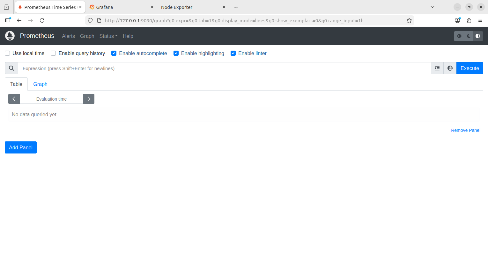
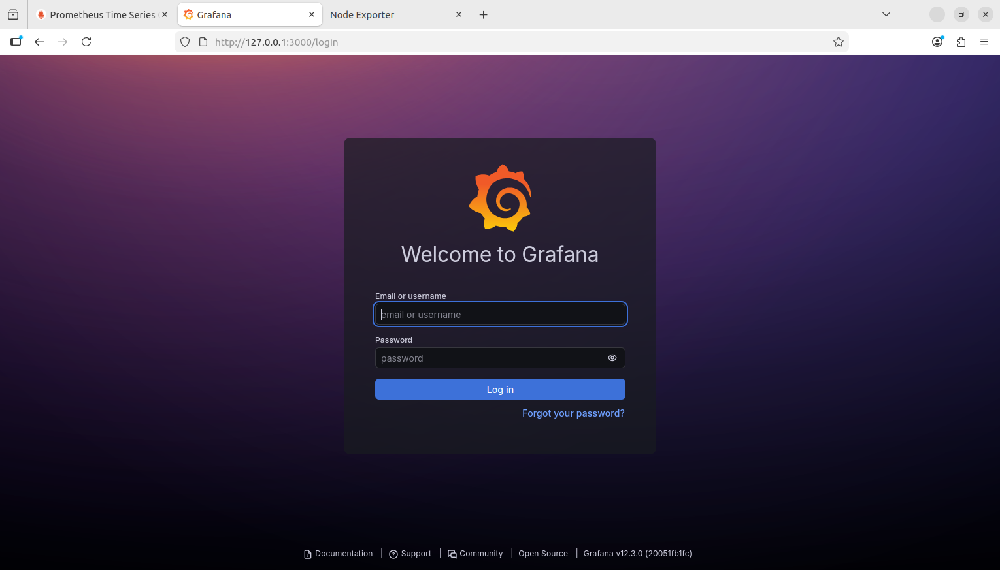
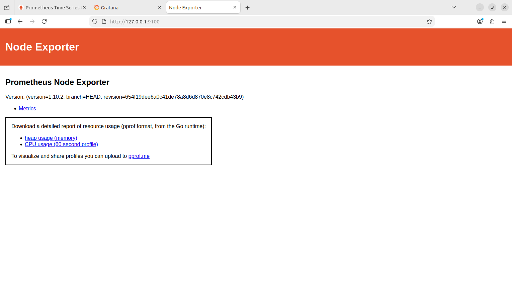

Diagnosed intermittent "Server Unavailable" errors in a production hospital environment. Identified a memory leak in a co hosted application through systematic metrics analysis.
Hospital Production Environment, 2025
Developers reported intermittent "Server Unavailable" errors on a production web application. With no obvious pattern in app logs, I deployed Prometheus, Grafana, and windows_exporter on the IIS server to investigate. Through metric analysis I identified a memory leak in a co hosted application that was starving system resources. The issue was escalated to developers with evidence, fixed, and has not recurred.
Application logs were quiet. There was no clear stack trace, no obvious crash, no smoking gun in event viewer. Traditional log spelunking was not going to solve this. I needed visibility into what the system was doing during the outage windows, not just what the application thought it was doing.
I took a data driven, observability first approach. Rather than restarting services blindly or changing configuration on a hunch, I instrumented the system first and let the data point me at the answer.
Installed windows_exporter on the IIS server and enabled the collectors I needed:
Pointed our existing Prometheus instance at the windows_exporter endpoint, validated the scrape config, and confirmed metrics were landing in Prometheus.
Built dashboards for system overview, IIS health, application pool memory, and .NET runtime so I could correlate metrics with user reported incident times.
Matched dashboard timelines against the times users reported errors. Memory was creeping up steadily on one specific application pool and the HTTP queue depth spiked exactly when memory ran low.
The application that users were reporting was not the source of the problem. A different, co hosted application on the same IIS server had a memory leak. Over a few hours its memory consumption would climb from a few hundred megabytes to several gigabytes, eventually starving the whole IIS instance and taking everything down with it.
Documented the findings with dashboard screenshots and clear before / after evidence. Handed it to the development team with the specific application identified. They confirmed the leak in code, shipped a fix, and the dashboards stayed up to validate that memory was now stable.
Validated with promtool check config prometheus.yml and verified targets in the Prometheus UI.



One application pool grew steadily from around 500 MB to over 3 GB across a 4 to 6 hour window. Then it would restart or starve the host and the cycle would repeat.
When available system memory dropped below 15 percent, the IIS HTTP request queue depth spiked from around 5 requests to more than 100. The worker process effectively stopped responding.
Because multiple applications shared the same IIS server, a memory leak in one application caused outages for all applications on that host. The reported application was a victim, not the cause.